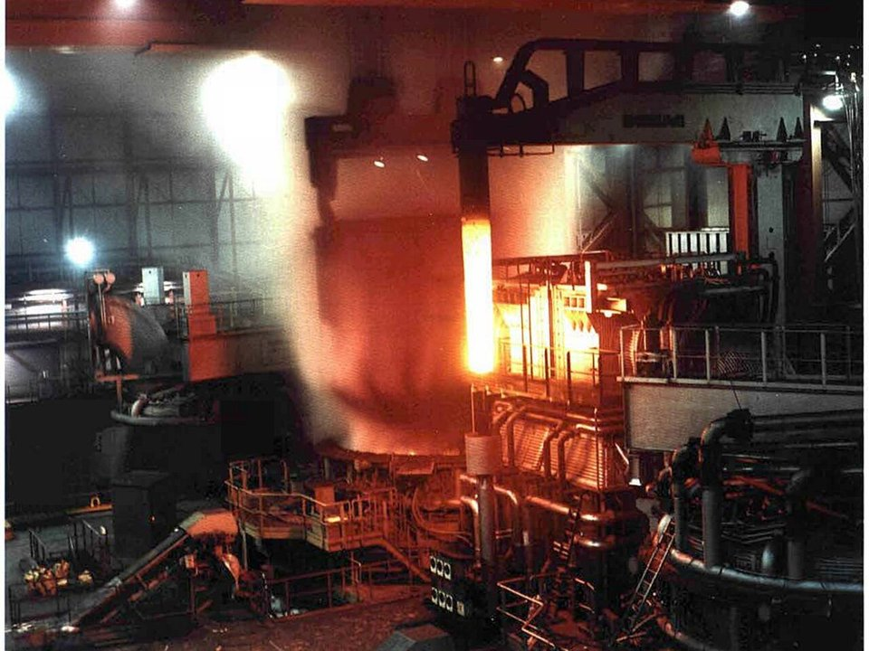
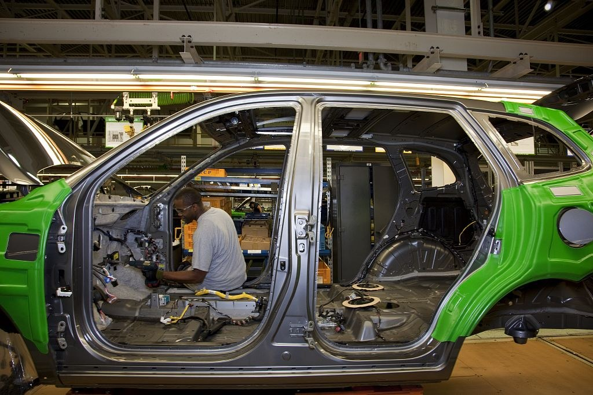
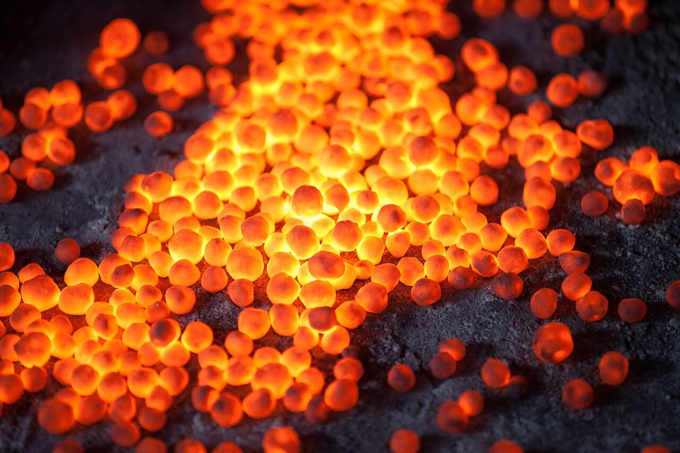

GLOBAL MILLS · USA · 2026.10
現代製鐵路易斯安那廠：韓國鋼廠的美國突圍戰
鋼鐵潮流工作室 · 發布 2026.10.04

本期重點
現代製鐵 9 月初在美國路易斯安那州舉行動土典禮，投資 58 億美元興建「直接還原鐵（DRI）＋電弧爐」一貫作業鋼廠，年產 270 萬噸熱軋與冷軋鋼板，主攻汽車用鋼，2029 年第一季商轉。這是韓國鋼廠第一座海外煉鋼廠，也是兩大韓國鋼廠罕見的聯手，目的很直接：繞過美國 50% 的鋼鐵關稅。
- 韓國三方聯手。 現代製鐵持股 50%、POSCO 20%、現代汽車與起亞各 15%，資金一半股本、一半舉債。
- 產品先賣給股東。 270 萬噸中 180 萬噸是高階汽車鋼板；現代、起亞各包銷 40 萬噸，POSCO 包銷 60 萬噸。
- 美國第一座新建 DRI＋電爐汽車鋼板廠。 以天然氣將鐵礦砂丸粒還原成直接還原鐵，再進電爐煉鋼，公司宣稱碳排比高爐少約 70%。
- 州政府大手筆補貼。 路易斯安那州已提供約 26 億美元獎勵方案，9/17 再核准 13 億美元免稅債券，但地方對保密協定與汙染仍有疑慮。
專案基本資料
營運公司HYUNDAI-POSCO Louisiana Steel LLC
地點路易斯安那州 Ascension 郡RiverPlex MegaPark，密西西比河畔，廠區約 1,700 英畝
投資額58 億美元股本 29 億＋借款 29 億
年產能270 萬噸汽車鋼板 180 萬噸＋一般鋼品 90 萬噸
製程DRI 豎爐 → 電弧爐 → 熱軋 → 冷軋以天然氣還原鐵礦砂丸粒
產品熱軋、冷軋汽車鋼板供應美國與墨西哥市場
商轉時程2029 年第一季
營收預估約 40 億美元／年滿產時
就業直接 1,300 人間接 4,100 人
時間軸
- 2025.03現代集團宣布對美投資，鋼廠為核心
- 2025.04POSCO 表態入股
- 2025.06美國鋼鐵關稅升至 50%
- 2025.12POSCO 確認 5.82 億美元取得 20%
- 2026 Q1開始施工
- 2026.09 初舉行動土典禮
- 2026.09.17州核准 13 億美元免稅債券
- 2029 Q1預定商轉
股權與產品分配：先綁住客戶
- 現代製鐵50%
- POSCO20%
- 現代汽車15%
- 起亞15%
- 現代製鐵130 萬噸
- POSCO60 萬噸
- 現代汽車40 萬噸
- 起亞40 萬噸
產品分配中「現代製鐵」為股東包銷後的剩餘產能，由現代製鐵自行銷售。
| 股東 | 持股 | 包銷量（萬噸／年） | 角色 |
|---|---|---|---|
| 現代製鐵 | 50% | — | 主導建廠與營運，其餘產能自行銷售 |
| POSCO | 20% | 60 | 取得美國在地產能，供應其北美汽車客戶 |
| 現代汽車 | 15% | 40 | 供應阿拉巴馬廠、喬治亞 Metaplant |
| 起亞 | 15% | 40 | 供應喬治亞廠 |
三家股東合計包銷 140 萬噸，超過總產能一半。新鋼廠最大的風險是投產初期的客戶認證與訂單，這個架構等於在動土前就先鎖定基本盤。汽車鋼板從試軋到通過車廠認證通常要一到兩年，有自家車廠當客戶，認證時程與產品組合都更好掌握。

製程解析：為什麼是 DRI＋電爐
美國新建鋼廠幾乎都是以廢鋼為原料的電爐，但純廢鋼電爐很難做高階汽車外板。現代製鐵選擇自建 DRI，是這個專案技術上最關鍵的決定。

- 稀釋殘留元素。 廢鋼來源混雜，銅、錫、鎳等殘留元素無法在煉鋼中去除，會影響深衝性與表面品質。DRI 幾乎不含這些元素，按比例摻入電爐，就能把殘留元素稀釋到汽車外板與高強度鋼要求的水準。
- 控制氮含量。 電爐煉鋼容易吸氮，而汽車深衝用的超低碳 IF 鋼對氮非常敏感。DRI 含碳，熔解時產生的一氧化碳氣泡有助於脫氮，這也是 DRI＋電爐能做出接近高爐品質鋼板的原因之一。
- 減碳。 以天然氣還原鐵礦砂，碳排遠低於焦炭高爐；公司宣稱可減少約 70%，獨立分析多估計在五成到三分之二之間。官方規劃先以天然氣搭配碳捕捉，未來再視綠氫成本轉換，但承認「很難確定氫氣何時具經濟性」。
- 配套供氣。 法商 Air Liquide 投資 3.5 億美元在當地建製氧設備，供應電爐吹氧與製程用氣。
為什麼選路易斯安那
- 天然氣。 DRI 的還原劑與燃料都是天然氣，墨西哥灣沿岸是美國天然氣價格最低、管線最密集的地區。
- 密西西比河港口。 DRI 需要高品位的直接還原級鐵礦砂丸粒，多半要進口；廠區緊鄰密西西比河，大宗原料可直接走水運進廠，成品也能沿河北上或出海。
- 接近客戶。 與阿拉巴馬、喬治亞的現代、起亞車廠同屬美國東南部汽車帶，陸運距離短。
- 有前例。 Nucor 在同州 St. James 郡已運轉 DRI 廠多年，當地有相關人力與供應鏈基礎。
補貼與地方爭議
- 補貼規模。 州政府獎勵方案約 26 億美元，含 2 億美元工業稅減免（ITEP）；9/17 再核准 13 億美元免稅債券（公共設施局 9 億、南路易斯安那港 4 億）。
- 保密協定。 倡議團體揭露地方官員與現代簽了至少 23 份保密協定，公開資料訴訟仍在進行。
- 環境疑慮。 Ascension 郡位於石化廠密集的「癌症巷」沿線，居民團體要求具法律效力的社區利益協議與環境正義評估。
- 許可未齊。 雖已動工，部分環評與陸軍工兵署許可仍在審查中。
風險與挑戰
- DR 級丸粒供應。 全球直接還原級丸粒供給有限，歐洲、中東、美國的 DRI 新案都在搶，原料長約與價格是長期營運成本的關鍵。
- 建廠成本與人力。 美國建廠成本與工資高，大型專案常見延誤與超支；韓國技術人員赴美的簽證安排也是韓企在美建廠的老問題。
- 市場競爭。 美國汽車鋼板市場已有 Cleveland-Cliffs、Nucor、Steel Dynamics、AM/NS Calvert 等強勁對手，2029 年投產時美國新增電爐產能也將陸續到位。
- 政策變數。 投資前提是高關稅持續；若 232 關稅日後調降或豁免擴大，在地生產的成本優勢會縮小。
- 母公司財務。 現代製鐵近年獲利承壓，同時在韓國縮減鋼筋產能（仁川廠 1 月關閉一條鋼筋產線），29 億美元借款對財務結構是考驗。
對台灣鋼鐵業的觀察
- 「關稅牆內設廠」成為主流。 現代製鐵、POSCO、日本製鐵（收購 U.S. Steel）都選擇直接進入美國生產。台灣鋼品對美出口面對 50% 關稅，又缺少類似規模的在地布局，美國市場的空間只會更窄。
- 汽車鋼板供應鏈綁定車廠。 車廠直接入股鋼廠、包銷產量，美國汽車鋼板市場的門檻更高，外來鋼廠以出口方式切入更難。
- DRI＋電爐成為高爐替代方案。 中鋼 1 號高爐將於 2029 年前除役，長期減碳路徑可參考 DRI＋電爐，但台灣缺乏便宜天然氣與大型 DRI 原料供應，條件與美國墨西哥灣差異很大。
- 原料競爭加劇。 DR 級丸粒與熱壓鐵塊（HBI）需求增加，可能推高高品位鐵礦砂的溢價，對以高爐為主的亞洲鋼廠也會有連動影響。
觀察重點
- 環評與陸軍工兵署許可的核發進度，以及施工是否如期。
- DR 級丸粒的長約供應商與價格條件。
- DRI 豎爐、電爐與軋延設備的供應商與合約。
- 碳捕捉與氫氣轉換的具體時程。
- 美國 232 關稅政策走向，以及其他亞洲鋼廠是否跟進在美設廠。
資料來源
- Hyundai Steel Celebrates Louisiana EAF Steel Mill Project Launch（現代汽車集團，2026-09）
- Hyundai Steel holds Louisiana EAF launch event（Steel Times International，2026-09）
- Hyundai Steel breaks ground on $5.8 billion EAF mill in Louisiana（SMM，2026-09）
- Hyundai Steel's Louisiana Mill to Generate $4 Billion in Annual Sales（Seoul Economic Daily，2026-09-07）
- Posco takes 20% stake, joins Hyundai Steel in $5.8b US plant（The Korea Herald）
- POSCO confirms $582 mln investment on Hyundai Steel's US plant（Mysteel，2025-12-18）
- State Bond Commission approves $1.3B in tax-free bonds for Ascension Hyundai Steel plant（KRVS，2026-09-18）
- Hyundai's new steel mill sparks hopes and fears in Louisiana（Louisiana Illuminator，2026-06-29）
- Hyundai to make 'low-carbon' steel at $6B plant in Louisiana（Canary Media）
- Hyundai Steel closes Incheon rebar plant（Mysteel，2026-01-26）
內容僅供產業資訊參考，不構成投資建議。新聞版權屬原出處所有。